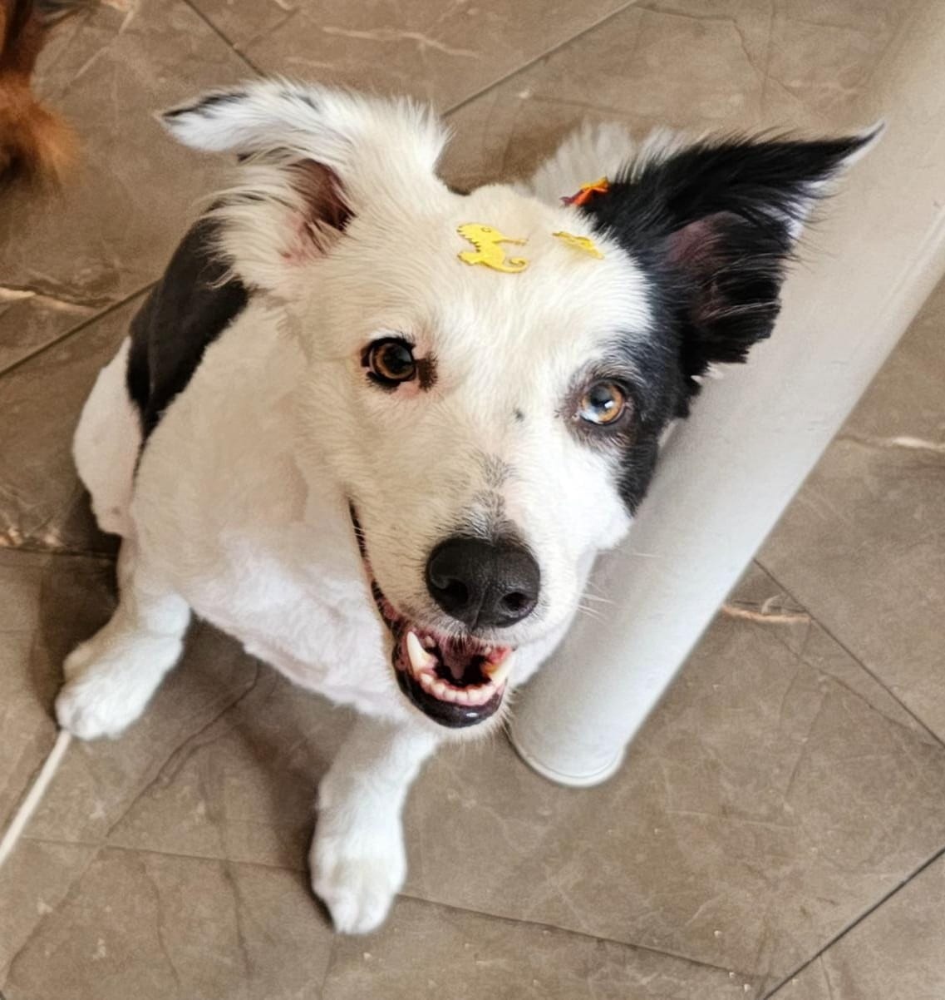
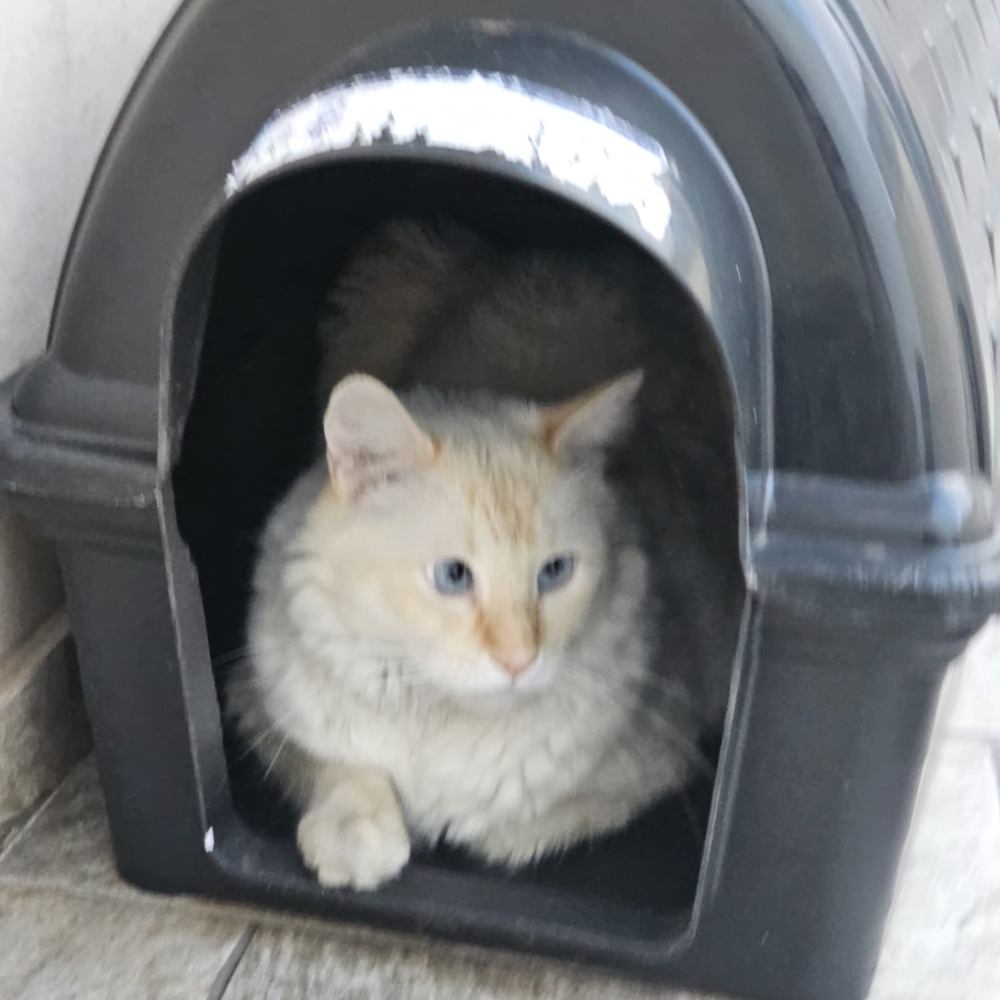
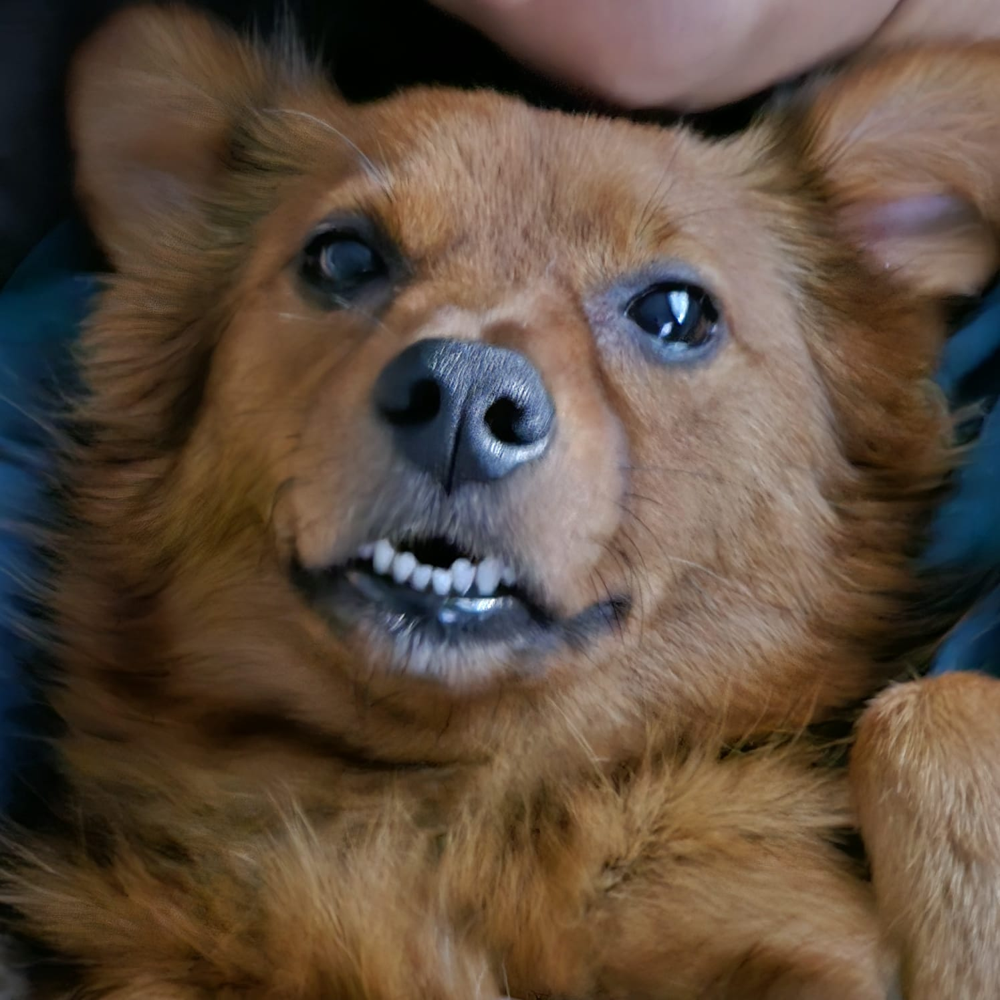
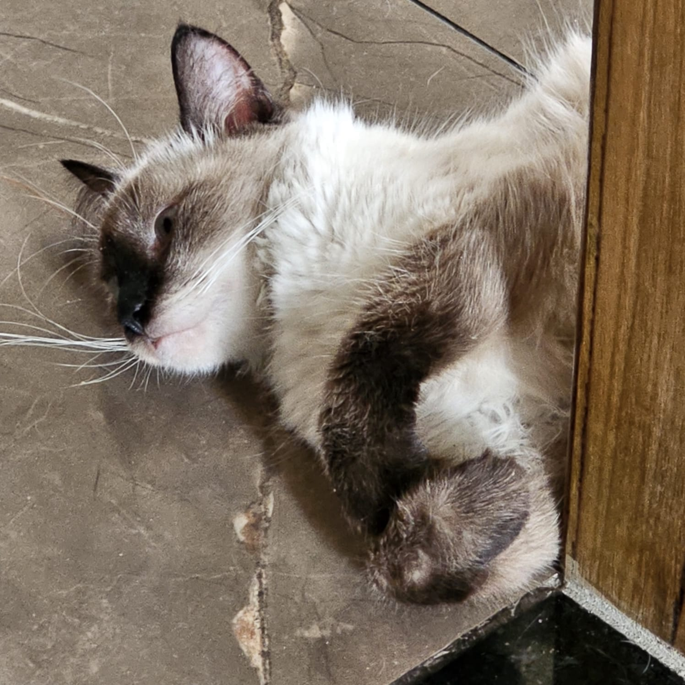
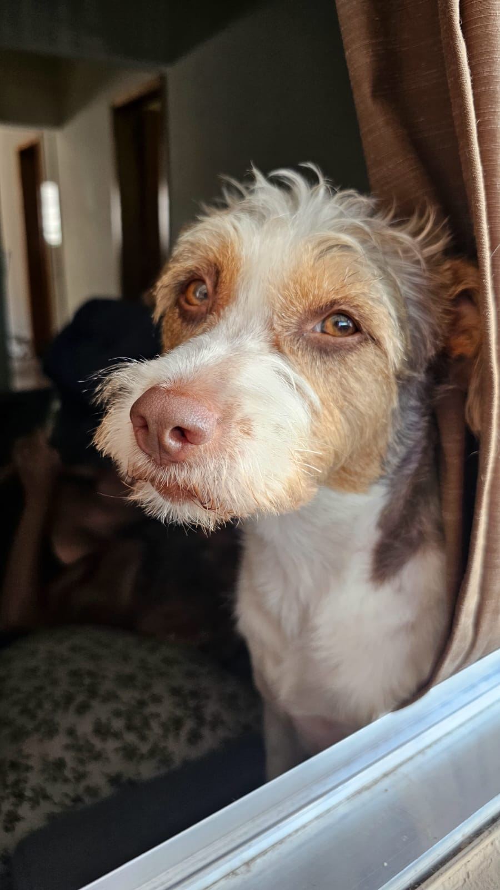
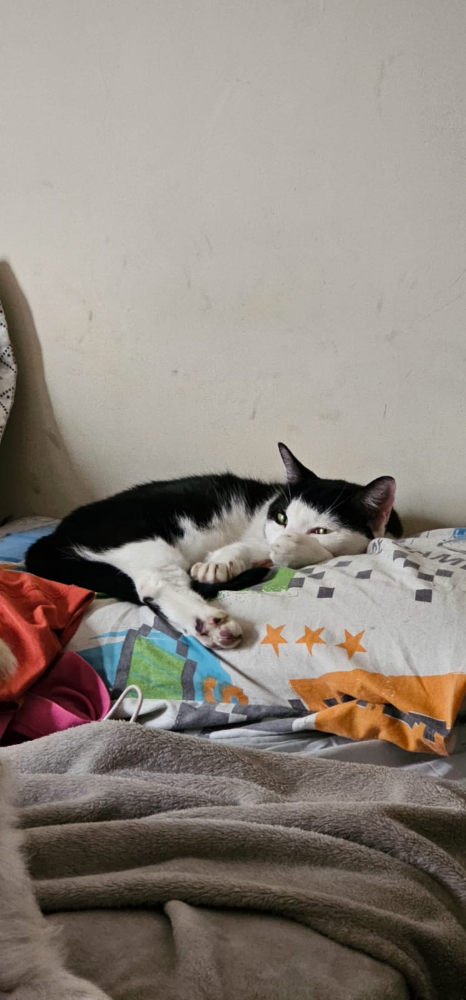
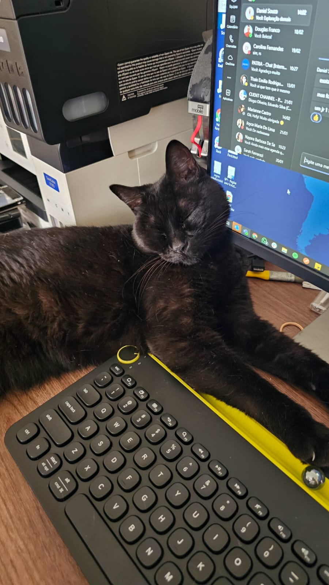

Cada olhar, um capítulo de uma história de amor e superação. Estes são meus pets adotados, cada um com
sua jornada única, suas peculiaridades e um amor infinito para dar. Eles me ensinaram que a adoção é um
ato de amor puro, capaz de transformar vidas - tanto a deles quanto a minha

Luna
Uma Border Collie de 3 anos, cheia de energia e doçura. Sua deficiência auditiva não a impede de
ser brincalhona e amável, embora às vezes esqueça do próprio tamanho.

Rajah
Um gato branco de 4 anos, conhecido por sua gentileza. A chegada de Zoro parece ter alterado sua
"masculinidade", tornando-o ainda mais dócil.

Mantega
Uma vira-lata de 4 anos que adora carinho e ser chamada de "princesa" com voz de bebê. Uma
verdadeira amante de atenção!

Zoro
Um siamês de 1 ano com um apetite voraz. Ele não hesita em miar até que sua comida seja servida,
três vezes ao dia.

Ruela
Uma vira-lata de 3 anos com uma personalidade forte. Apesar de fêmea, age como um macho e
acredita ser a líder da casa.

Akira
Uma frajola de 10 anos, a matriarca da casa. Adora carinho no rabinho e é uma presença constante
e acolhedora.

Dandara
Uma gata preta de 8 anos com uma atitude de rainha má. Ela não hesita em impor sua autoridade
sobre os outros animais da casa.